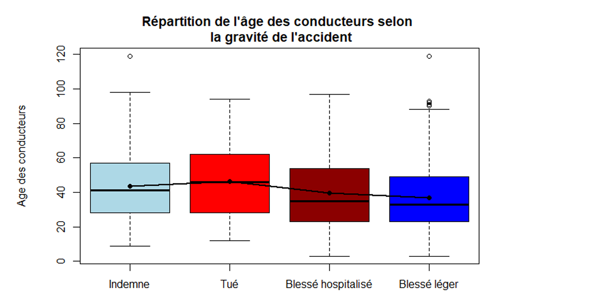

Présentation du projet
Ce projet repose sur l'analyse de données issues des accidents corporels de la circulation survenus en Normandie entre 2019 et 2023. Les données, mises à disposition par l'Observatoire National Interministériel de la Sécurité Routière (ONISR), ont été exploitées pour explorer les tendances, identifier les principaux facteurs de risque et mieux comprendre la répartition des victimes selon différents critères.
Démarche

Ce que j'ai appris
Ce projet m'a permis de développer des compétences solides en manipulation et préparation de données, ainsi qu'en conception de visualisations claires pour communiquer efficacement les résultats.
Compétences en manipulation et préparation de données complexes sous R.
Conception de visualisations claires et pertinentes pour explorer et communiquer les résultats.
Application de méthodes statistiques pour identifier des relations entre variables.
Approche méthodique et rigoureuse de bout en bout, de l'exploration à la restitution.